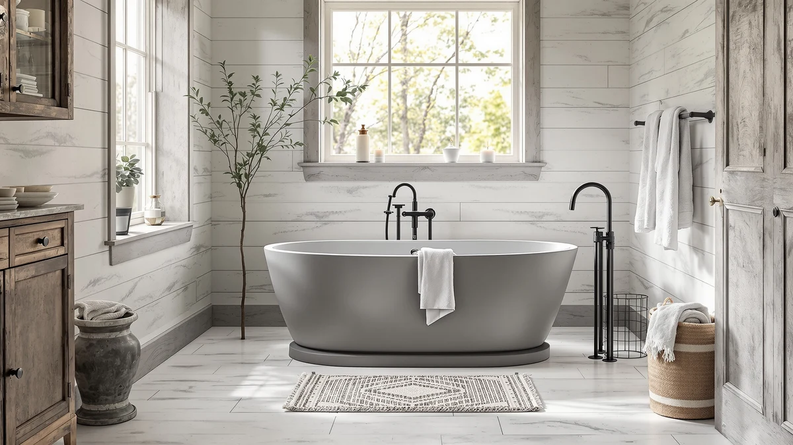

MEDUNJESS 65'' Stone Resin Review (2026): Worth It?
Prices and picks verified as of October 2026. Independent, reader-supported reviews.


Quick Answer
In this MEDUNJESS 65'' stone resin review, the tub's biggest selling point is its solid stone resin shell, a material that gives it a matte, quarry-like finish acrylic tubs cannot match, but that finish comes at a steep premium. At $1,739.99, it costs far more than the acrylic and smaller stone resin alternatives compared here, and MEDUNJESS's own listing does not publish a warranty or weight capacity. If the stone resin finish matters more to you than saving money, the alternatives below trade that finish for a lower price.
Our pick: MEDUNJESS 65'' Stone Resin Free, $1,739.99 Check Price on Amazon
Bottom line: our top pick is the MEDUNJESS 65'' Stone Resin Free Standing Tub at $1,739.99.
Things to Know Before You Buy
- This MEDUNJESS 65'' stone resin review breaks down whether the $1,739.99 price is justified by its stone resin construction, since three acrylic and stone resin alternatives here cost less than half as much.
- The tub measures 64.96 inches long, 33.46 inches wide, and 25.19 inches deep, about 2 inches shorter than the two 67-inch acrylic alternatives compared here but nearly 6 inches longer than LarWorks' 59-inch stone resin model. None of the three alternatives publish a width figure, so its 33.46-inch width cannot be compared directly.
- MEDUNJESS's listing does not break out a specific resin composition, coating warranty, or weight capacity, so you are relying on the material's general reputation for durability rather than a published spec.
- Stone resin tubs generally weigh more than acrylic tubs of a similar size, so confirm your bathroom floor and delivery access can handle the extra weight and bulk before you order.
- Freestanding tubs expose their plumbing connections, so check that your rough-in lines up with this model's drain location before you purchase.
This MEDUNJESS 65'' stone resin review looks at whether a solid stone resin shell justifies a $1,739.99 price tag against three freestanding tubs that cost less than half as much. At 64.96 inches long, 33.46 inches wide, and 25.19 inches deep, the tub lands between the two 67-inch acrylic alternatives and LarWorks' smaller 59-inch stone resin model covered in this comparison.
We priced the MEDUNJESS against a 67-inch acrylic tub from SierraSquad, a 67-inch acrylic tub from WOODBRIDGE, and a smaller 59-inch stone resin tub from LarWorks, and at $1,739.99 it costs more than double any of the three. The question this review answers is whether the stone resin finish earns that premium, or whether a cheaper acrylic or smaller stone resin tub serves most bathrooms equally well.
Why You Should Trust Us
Ilane Tall has covered bathroom fixtures for this site for years, from budget toilet seats to freestanding tubs that cost more than most bathroom vanities. For this MEDUNJESS 65'' stone resin review, we compared MEDUNJESS's published dimensions and price against three rival freestanding tubs, and we researched what stone resin construction typically means for weight, upkeep, and cost compared to the acrylic shells used in cheaper models.
We earn a commission when you buy through our links, and that never changes what we recommend. When a listing leaves out a detail buyers should know, like a published warranty or weight capacity, we say so directly instead of glossing over the gap.
Our Research Experience
For this MEDUNJESS 65'' stone resin review, we focused on the two factors that matter most when a tub costs this much more than its competitors: what the stone resin material actually delivers, and whether the tub's size justifies the price gap. Stone resin blends crushed natural stone with a resin binder, producing a matte, solid-surface feel that stays warmer underfoot than acrylic and typically weighs more for the same footprint. That extra mass is part of why stone resin tubs command a premium over acrylic models like the SierraSquad and WOODBRIDGE tubs compared here.
Size was the other variable we weighed closely. At 64.96 inches long, the MEDUNJESS sits between the two 67-inch acrylic tubs compared here and LarWorks' smaller 59-inch stone resin model, a middle-of-the-road length rather than a standout in either direction. Its 33.46-inch width is the only width figure published among the four tubs in this review, so we cannot compare it directly against the alternatives.
We also looked at what the listing leaves unanswered. MEDUNJESS does not publish a specific resin composition, a coating warranty, or a weight capacity, and none of the three alternatives in this review publish those details for their own tubs either. That gap does not disqualify the tub, but it is worth knowing before you pay a four-figure price for it.
Overview & Specs

MEDUNJESS 65'' Stone Resin Free
What we like
- Solid stone resin shell gives a matte, quarry-like finish that stays warmer underfoot than the acrylic tubs compared in this review
- At 64.96 inches long, it sits between the compact 59-inch LarWorks tub and the longer 67-inch acrylic models, a middle-ground length that fits a wider range of bathrooms
- Stone resin's added mass generally makes for a more stable tub that resists flexing under weight better than lighter acrylic shells
Flaws but not dealbreakers
- At $1,739.99, it costs more than double any of the three alternatives in this review
- MEDUNJESS does not publish a coating warranty or weight capacity, so you are relying on the stone resin category's general reputation rather than a documented spec
- Stone resin's extra weight means you need to confirm your bathroom floor and delivery access can handle a heavier tub before you order
| Material | — |
| Size | 64.96X33.46X25.19 inch |
The MEDUNJESS 65'' Stone Resin Free tub builds its case on material rather than price. Its solid stone resin shell gives it a matte, quarry-like finish that acrylic tubs cannot replicate, and at 64.96 inches long, 33.46 inches wide, and 25.19 inches deep, it lands between the compact 59-inch LarWorks stone resin tub and the longer 67-inch acrylic alternatives covered in this review. That middle-ground length should fit most standard bathroom footprints without the compromises of either extreme.
The tradeoff is cost. At $1,739.99, the MEDUNJESS costs more than double the SierraSquad and WOODBRIDGE acrylic tubs and well over double LarWorks' smaller stone resin model, and MEDUNJESS's listing does not spell out a coating warranty or weight capacity the way you would expect at this price point. You are paying primarily for the stone resin finish and its mid-length footprint, not for documented durability claims beyond what the material category generally offers.
What We Liked
The stone resin shell is the standout feature of this tub. It gives the MEDUNJESS a matte, quarry-like finish that reads as a higher-end bathroom fixture next to the glossy acrylic tubs from SierraSquad and WOODBRIDGE, and stone resin generally stays warmer to the touch through a long soak than acrylic does.
Length also worked in its favor. At 64.96 inches, the MEDUNJESS lands between LarWorks' compact 59-inch stone resin tub and the longer 67-inch acrylic alternatives in this review, a middle-ground size that fits a standard bathroom footprint without feeling cramped.
Stability is a byproduct of the material itself. Stone resin tubs tend to weigh more than acrylic tubs of a similar size, and that added mass generally means less flex or movement under a bather's weight than you would feel in a lighter acrylic shell.
What Could Be Better
Price is the clearest drawback here. At $1,739.99, the MEDUNJESS costs more than double any of the three alternatives in this review, and that gap is not backed up by extra published specs, only the stone resin material and the mid-length footprint.
Documentation is the other weak point. MEDUNJESS's listing does not specify a coating warranty, a weight capacity, or a precise resin composition, details that would help justify a price this high. You are trusting the material's general reputation for durability rather than a documented guarantee.
Weight is worth planning around too. Stone resin tubs generally weigh considerably more than acrylic tubs of the same size, so confirm your bathroom floor, doorway clearances, and delivery access can accommodate a heavier tub before it arrives.
Who Is It For?
Buy the MEDUNJESS 65'' Stone Resin Free tub if the matte stone resin finish matters more to you than price. It suits a single bather who wants a stone resin soaking tub with a mid-length footprint and is comfortable paying a significant premium for it over an acrylic alternative.
Skip it if budget is a real constraint. The SierraSquad and WOODBRIDGE acrylic tubs in this review cost less than half as much, and LarWorks' stone resin model gets you the same general material at under half the price, in a shorter 59-inch footprint.
Alternatives to Consider
If the MEDUNJESS's price gives you pause, these three freestanding tubs cover the same general categories, acrylic and stone resin, at a fraction of the cost.

Editor's Pick
67" Acrylic Freestanding Bathtub Modern
SierraSquad's 67-inch acrylic freestanding tub trades the MEDUNJESS's stone resin finish for a lower price and a longer footprint. At $761.99, it costs $978.00 less than the MEDUNJESS, putting more than half the price difference back into your renovation budget, and its 67-inch length gives a taller bather more room to stretch out lengthwise than the MEDUNJESS's 64.96-inch tub does. Acrylic will not have the matte, stone-like feel of the MEDUNJESS's shell, and it generally runs lighter and less rigid than a stone resin tub of the same size, so do not expect the same underfoot warmth or heft. This listing does not publish a weight capacity or coating warranty either, so on documentation it is roughly even with the MEDUNJESS. Its price also puts it closer to what most freestanding tubs in this category cost, making it an easier fit for a standard renovation budget than the MEDUNJESS's four-figure price tag. For a bather who wants length over the stone resin finish and would rather save nearly $1,000, the SierraSquad is the stronger buy.
$761.99
Check Price on Amazon
Best Value
WOODBRIDGE 67" Acrylic Freestanding Bathtub
WOODBRIDGE's 67-inch acrylic freestanding tub lands within $8.00 of the SierraSquad model above and $985.99 below the MEDUNJESS, making it the cheapest tub in this comparison. Like the SierraSquad, its 67-inch length beats the MEDUNJESS's 64.96-inch footprint for a taller bather, though its acrylic shell will not match the matte, stone-like finish or the added heft of the MEDUNJESS's stone resin construction. This listing does not break out a weight capacity or coating warranty either, so on documentation it is roughly even with the MEDUNJESS and the SierraSquad. At $754.00, it also leaves enough budget headroom to add a floor-mount faucet and professional installation, costs that stack up fast once you have already spent $1,739.99 on the tub itself. For most bathrooms, that combination of length and price makes the WOODBRIDGE 67'' a practical everyday choice, with the MEDUNJESS reserved for buyers who specifically want the stone resin finish.
$754.00
Check Price on Amazon
Premium Choice
59" Stone Resin Freestanding Soaking
LarWorks' 59-inch stone resin freestanding soaking tub is the closest material match to the MEDUNJESS in this review, and it is also the cheapest tub compared here at $749.99, a full $990.00 less than the MEDUNJESS. Both share the same general stone resin category, so you get the matte finish and the added heft that acrylic tubs do not offer, but LarWorks' 59-inch length falls nearly six inches short of the MEDUNJESS's 64.96 inches, meaning less room to stretch out. LarWorks' listing does not publish its width, depth, coating warranty, or weight capacity either, so on documentation the two stone resin tubs are evenly matched, and neither gives you much more than the material category itself to go on. At under $750, it also comes in cheaper than both acrylic alternatives in this review, making it the strongest value if stone resin is the material you specifically want. If you want a stone resin tub without the MEDUNJESS's four-figure price and do not mind a shorter soak, the LarWorks is the tub to buy instead.
$749.99
Check Price on AmazonHow big is the MEDUNJESS 65'' stone resin tub?
The MEDUNJESS measures 64.96 inches long, 33.46 inches wide, and 25.19 inches deep.
Does the MEDUNJESS tub come with a drain, overflow, or installation hardware?
MEDUNJESS's listing does not specify drain, overflow, or installation hardware, so budget for that separately along with a floor-mount or freestanding faucet.
Frequently Asked Questions
How big is the MEDUNJESS 65'' stone resin tub?
The MEDUNJESS measures 64.96 inches long, 33.46 inches wide, and 25.19 inches deep. That length falls between LarWorks' 59-inch stone resin tub and the two 67-inch acrylic alternatives in this comparison, and its 33.46-inch width is the only width figure published among the four tubs reviewed here.
Does the MEDUNJESS tub come with a drain, overflow, or installation hardware?
MEDUNJESS's listing does not specify drain, overflow, or installation hardware, so budget for that separately along with a floor-mount or freestanding faucet. None of the four tubs in this review publish that hardware as included, so plan for it regardless of which one you choose.
Is the MEDUNJESS 65'' stone resin tub worth the price over the acrylic alternatives?
It depends on what you value. This MEDUNJESS 65'' stone resin review found the tub's stone resin finish justifies the price only if that specific material matters to you, since the SierraSquad and WOODBRIDGE acrylic tubs cost less than half as much and LarWorks offers the same stone resin category for under $750. For a bather who specifically wants a stone resin tub and does not mind paying a premium, the MEDUNJESS is the stronger buy.
Final Verdict
This MEDUNJESS 65'' stone resin review comes down to material versus price. The MEDUNJESS wins on finish, with a stone resin shell that beats acrylic on look and feel, and it sits at a middle-ground length between the shorter LarWorks tub and the longer acrylic alternatives, but none of that comes cheap at $1,739.99. If you want a stone resin tub with a mid-length footprint and do not mind paying a four-figure premium, the MEDUNJESS is the tub to buy. Choose the SierraSquad or WOODBRIDGE if you would rather save nearly $1,000 with a longer acrylic shell, or the LarWorks if you want the stone resin look at under $750 and can live with a shorter tub.